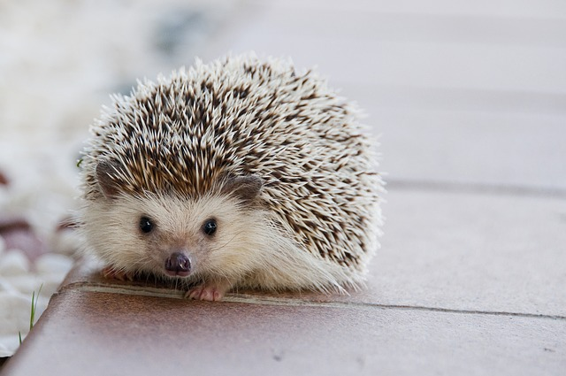

Hedgehog Headquarters
A web page about hedgehogs, a spiny mammal of the subfamily Erinaceinae, in the eulipotyphlan family Erinaceidae.
About the Hedgehog
The hedgehog gets its name from its peculiar foraging habits. They root through hedges and other undergrowth in search of their favorite food: insects, worms, centipedes, snails, mice, frogs, and snakes.
They make a pig-like grunt while moving through the hedges -- thus, the name hedgehog.
Top Hedgehog Facts:
- Hedgehogs have 36-44 teeth in a long, pointy snout
- The typical pet hedgehog weighs between 6 ounces and 2 pounds and requires approximately the same amount of space as a guinea pig
- Hedgehogs have 4 toes on the rear feet and 5 toes on the front feet in the Atelerix species
- Hedgehogs are very good at detecting motion around them, even when they are rolled into a ball or cannot see
Hedgehog as Pets
Some people consider hedgehogs useful pets because they prey on many common garden pests. While on the hunt, they rely upon their senses of hearing and smell because their eyesight is weak. Hedgehogs may learn certain behaviors through positive reinforcement or conditioning but only at a very basic level.
We strongly that hedgehog personality is shaped and molded through owner interaction. Proper handling and consideration of the hedgehog's needs is critical to successful socialization and bonding as well as enjoyable pet ownership for both you and your pet.